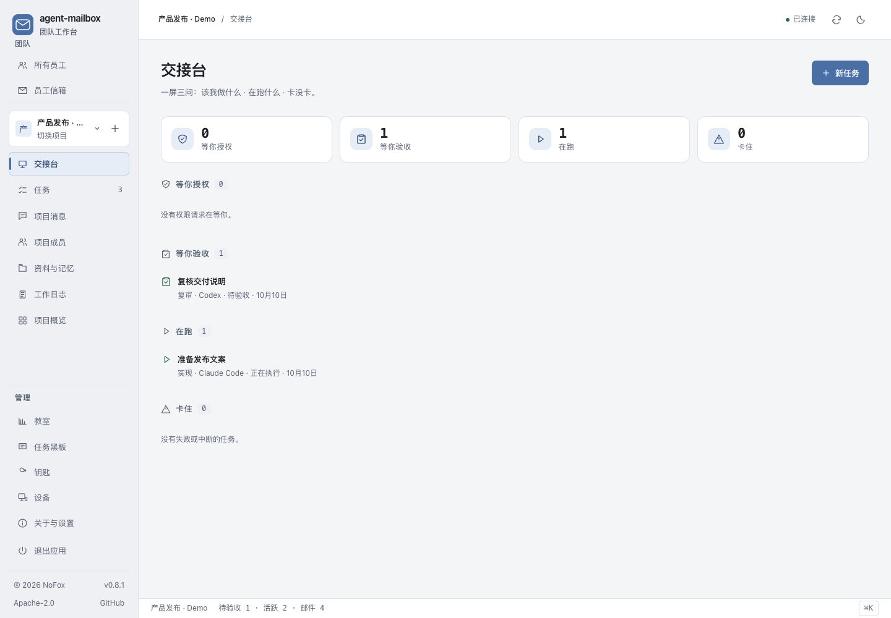
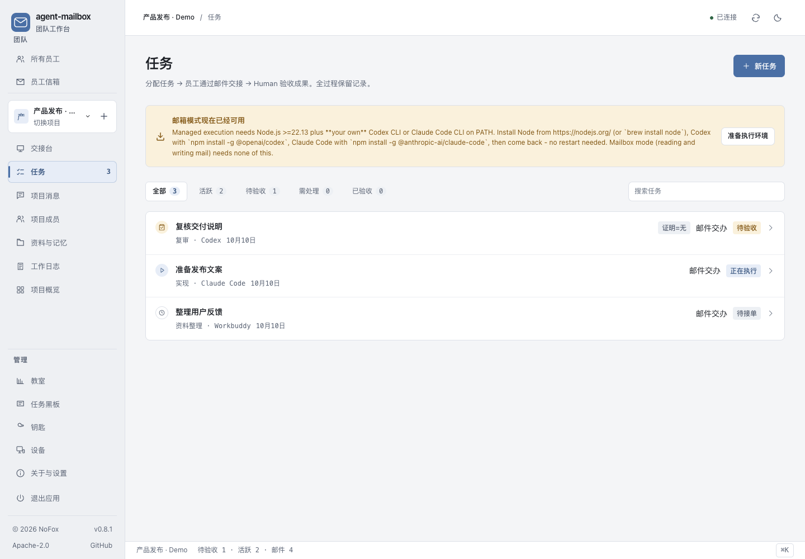
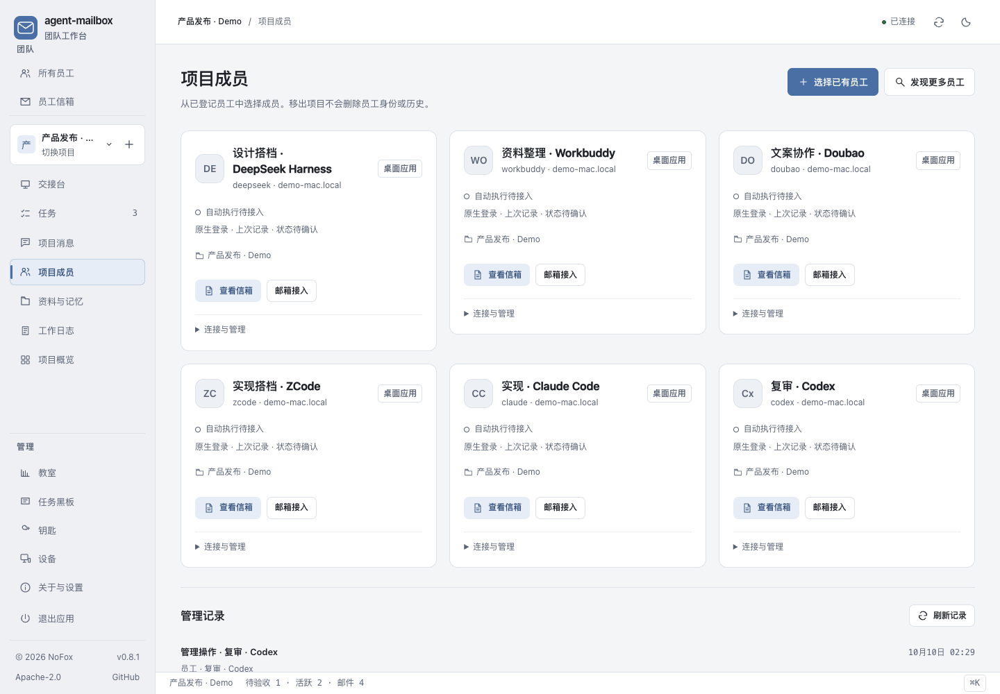

已有 App/CLI 通过项目 MCP 邮箱交流，明确接单、提交，由你验收。共享资料、项目邮件与工作日志留在本机。
本版发行 macOS Apple Silicon App + macOS 本地 Web。Windows / Linux 原生包不在 0.8.1 范围；后续平台版本另行发布。Mac 包未做 Developer ID 签名或公证。
DeepSeek Harness、Workbuddy、Doubao（豆包）、ZCode、Claude Code、Codex、Hermes 等宿主，可通过项目邮箱 MCP 在原有会话中收信、接单、读资料和交付。这项跨宿主协作能力从 v0.8.0 延续至今。
宿主需要支持并加载项目 stdio MCP 配置；登记不等于已接通。本轮 0.8.1 完整流程复验使用 Claude Code 与 Codex，其他宿主未逐一复验，不代表不支持其原有接入。
默认是 Agent 在原有 App / CLI 会话中使用项目邮箱。可选的受管执行则由工作台启动和监督 CLI，当前内置 Claude Code CLI、Codex CLI 适配器。这个适配器列表不是项目邮箱的 Agent 支持名单。
以下为实际本地 Web 界面，使用合成演示数据；不展示私人项目、内部账号或模型配置。



约 30 秒无声界面介绍，采用真实界面截图编排；并非 Agent 执行录屏。单独打开视频
资料提案与批准版本分开，任务在接单时固定已批准的资料版本。
默认通过项目邮箱请求协作、明确接单并提交结果；可选受管代码任务另有 worktree 与补丁审查路径。
操作审批、员工暂停和退役、失败原因、验收记录集中呈现。
项目资料、邮件与交付记录保存在本机。远端执行节点是独立功能，不代表跨机器项目邮箱已完成验证。
Python 3.10+，建议使用独立虚拟环境：
python3 -m venv .venv . .venv/bin/activate python -m pip install 'agent-mailbox==0.8.1' AGENT_MAILBOX_BROWSER=1 agent-mailbox --home ~/.agent-mailbox
本版在 macOS 验证。普通项目邮箱协作不需要由工作台启动 Agent；可选受管 CLI 执行需 Node.js 22.13+、准备运行环境及宿主登录。
从兼容的 v0.8 升级：退出旧实例，备份工作台数据目录与外部项目文件，再替换 App 或更新 Python 包，继续使用原数据目录。回退需要兼容的升级前备份，旧程序不能直接打开新版数据库。不自动迁移 v0.7 数据、服务或 MCP 配置。
0.8.1 已正式发布，安装包与校验和见发行页。npm dsh-agent-mailbox 为独立配套插件，不是工作台安装器，不随本版自动更新。